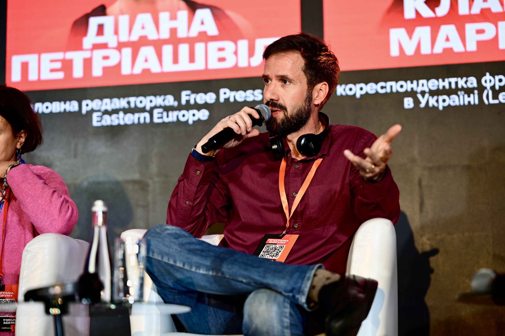

Jornalista. Doutorando em Relações Internacionais na UFSC. Mestre em Cultura Russa pela USP. Especialista em Rússia, Ucrânia e guerra da informação. Analista regular na GloboNews Internacional e CBN.
Depois de 20 anos construindo jornalismo digital em escala — editor-chefe do TechTudo (Globo), coordenador do Globo.com, gerente na NSC e no Canaltech — me dediquei à pesquisa sobre soberania, desinformação e guerra da informação no Leste Europeu pós-soviético. Mentor em programas da Google News Initiative e do ICFJ/Meta. Cobertura do SXSW (7×), Web Summit RJ (7× no palco), Slush Helsinki, MWC, CES, IFA Berlim, Global Teacher's Prize, WWDCs e grandes eventos globais de tecnologia e mídia.